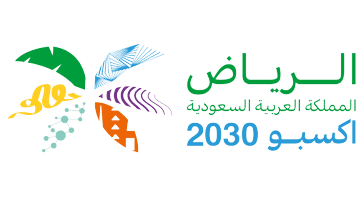

المملكة تفوز باستضافة معرض إكسبو الدولي 2030 في مدينة الرياض
فازت السعودية، الثلاثاء، باستضافة معرض «إكسبو الدولي 2030» في الرياض، بعد تفوقها الكبير على روما الإيطالية وبوسان الكورية خلال الجولة الأولى من الاقتراع الذي شهده «قصر المؤتمرات» في مدينة إيسي ليه مولينو، قرب العاصمة الفرنسية باريس.
تاريخ إكسبو
بدأ مفهوم اجتماع الأشخاص معاً لعرض وبيع ما أنتجوه منذ العصور القديمة. بعد أن كانت المهرجانات الزراعية موجودة لقرون عدة، بدأت مجموعات من الميكانيكيين والحرفيين في تنظيم معارضهم الخاصة في القرن السابع عشر تقريباً، ومع اقتراب القرن التاسع عشر، وتزايد وتيرة التصنيع، ولدت مهرجانات مخصصة لإظهار ما تمكن الأفراد والمجموعات من الميكانيكيين من إنجازه من خلال الابتكارات الجديدة، وفق موقع «هيستوري» المتخصص بالتاريخ العالمي
بشكل عام، جاءت معارض «إكسبو» العالمية التي أُقيمت في النصف الأول من القرن العشرين بمثابة استمرار للمفهوم الأساسي لـ«المركزية التكنولوجية» في القرن التاسع عشر (بشكل خاص تكنولوجيا الصناعة)؛ ومع ذلك، حصلت تحولات مهمّة. لقد حاول المعرض العالمي، الذي وُلد من عالم تقني، أن ينظر إلى أبعد من ذلك في الأفق الواسع أمامه، بأن ينظر إلى ما هو أبعد من التكنولوجيا ويبدأ في إيلاء المزيد من الاهتمام للظروف الإنسانية وللثقافة، وفق موقع «أنسيكلوبيديا» الموسوعي.